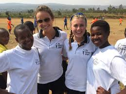

Hello, I am gerardine kabatesi,20 year old,Rwandan girls,
Iam a first-born from a family of nine people,both parent
four brothers ,two sisters and I.I am currently a student
at AkiraChix in Kenya acquiring skills about programming cour-
ses such as Python programming,Kotlin programming,and Java-
script programming,IOT(Internet of things),Industrial design
and proffensional courses like Startup,Navigating your journey
and Profesional development.
From 2008-2013 I went at Nyawera primary school,2014-2016
ordinal level at Nyamirama secondary school, I did national-
exams for ordinal level and I passed with first grade
after that I admitted to Kayonza modern secondary school to con-
tinue my advanced level in mathematics, Geograph and Economics
also, I did an exam to graduate for a diploma, I passed and I got
a chance of government scholarship.
In terms of finance,I want to be indepent being able to afford basic
needs, not to relying to someone .Making decisions and take risks
I will give back to my community,I will maintain good standard of my
family.I am preparing to be a software developer and being sociol change agent.

I have been empowered by komera project , they
are the one who shaped me to be who am I right now, through raising
me from the dark,tough,discouragement,depression and tears time and
now , I am able to speak , to raise my voice , this project located
in Rwanda